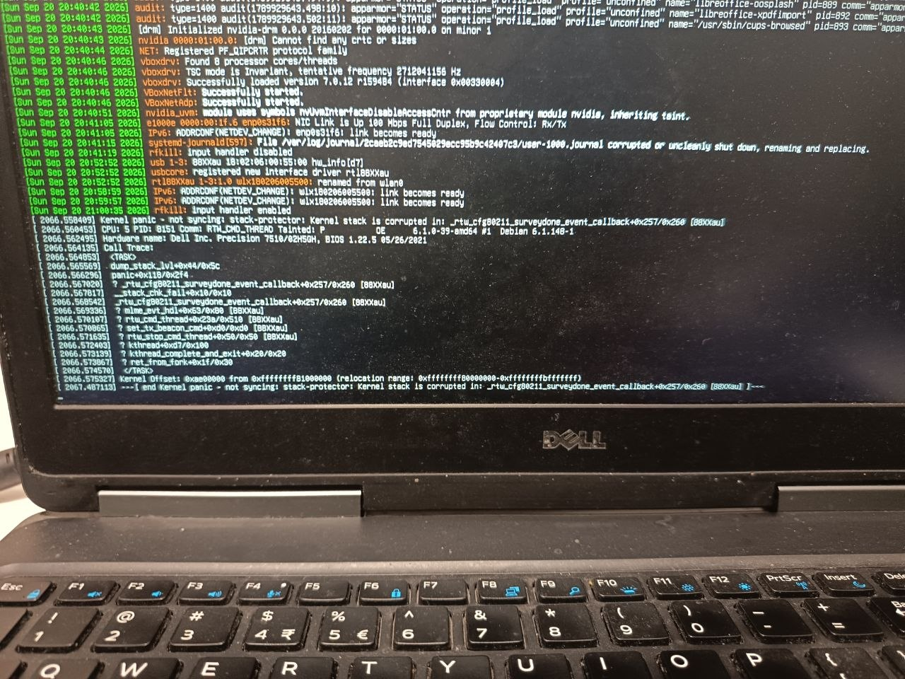

The bug
rtw_get_wps_attr_content() copies a WPS attribute's data into the
caller's buffer using the attribute's own data_len field (attacker-controlled,
up to 0xFFFF) with no destination-size check. On the Wi-Fi scan path,
the destination is u8 sr = 0 — one byte on the stack.
/* rtw_ieee80211.c */
memcpy(buf_content, attr_ptr + 4, attr_len - 4); // no bound on destination
/* ioctl_cfg80211.c — scan path */
u8 sr = 0; // 1 byte on the stack
rtw_get_wps_attr_content(wpsie, wpsielen,
WPS_ATTR_SELECTED_REGISTRAR, &sr, NULL); // copies data_len bytes into &srA crafted beacon with a Selected Registrar attribute claiming data_len=200
overflows the stack during a normal Wi-Fi scan, with no user interaction beyond having
Wi-Fi enabled.
Affected drivers
The vulnerable function is Realtek vendor code shared across the entire RTW driver family:
| Driver | Location | Status |
|---|---|---|
| rtl8723bs | drivers/staging/rtl8723bs (in-tree) | Patch posted |
| rtl8812au | aircrack-ng/rtl8812au (out-of-tree) | Vulnerable |
| rtl8188eus | aircrack-ng/rtl8188eus (out-of-tree) | Vulnerable |
| rtl8723du | lwfinger/rtl8723du (out-of-tree) | Vulnerable |
Affected forks and packages
- aircrack-ng/rtl8812au (~3.9k stars) — packaged by Kali Linux as
realtek-rtl88xxau-dkms - aircrack-ng/rtl8188eus (~1.1k stars)
- morrownr/8812au-20210820
- lwfinger/rtl8188eus
- lwfinger/rtl8723du
- cilynx/rtl88x2bu — likely affected, same vendor code family
- Ubuntu 24.04 LTS —
rtl8812au-dkmsin universe - Arch AUR —
rtl8812au-dkms-git
Proof
Emulation (mwemu)
The overflow was originally found and verified with
mwemu +
kohunt, which loads the real compiled
.ko and drives rtw_get_wps_attr_content with a crafted WPS IE
against a 1-byte ledger-tracked destination. This was used to verify all in-tree kernel
drivers without needing physical hardware for each chipset.
Hardware (rtl8812au)
Hardware verification was performed on an RTL8812AU USB adapter using the aircrack-ng out-of-tree driver, Debian 12 bookworm, kernel 6.1.0-39-amd64.
A crafted beacon broadcast over the air triggers __stack_chk_fail and a
kernel panic:

[ 2066.558409] Kernel panic - not syncing: stack-protector: Kernel stack is corrupted in: _rtw_cfg80211_surveydone_event_callback+0x257/0x260 [88XXau]
[ 2066.560453] CPU: 5 PID: 8151 Comm: RTW_CMD_THREAD Tainted: P OE 6.1.0-39-amd64 #1 Debian 6.1.148-1
[ 2066.562495] Hardware name: Dell Inc. Precision 7510/02H5GH, BIOS 1.22.5 05/26/2021
[ 2066.564135] Call Trace:
[ 2066.564853] <TASK>
[ 2066.565569] dump_stack_lvl+0x44/0x5c
[ 2066.566296] panic+0x118/0x2f4
[ 2066.567020] ? _rtw_cfg80211_surveydone_event_callback+0x257/0x260 [88XXau]
[ 2066.567817] __stack_chk_fail+0x10/0x10
[ 2066.568542] _rtw_cfg80211_surveydone_event_callback+0x257/0x260 [88XXau]
[ 2066.569336] ? mlme_evt_hdl+0x63/0x80 [88XXau]
[ 2066.570107] ? rtw_cmd_thread+0x23a/0x510 [88XXau]
[ 2066.570865] ? set_tx_beacon_cmd+0xd0/0xd0 [88XXau]
[ 2066.571635] ? rtw_stop_cmd_thread+0x50/0x50 [88XXau]
[ 2066.572403] ? kthread+0xd7/0x100
[ 2066.573139] ? kthread_complete_and_exit+0x20/0x20
[ 2066.573867] ? ret_from_fork+0x1f/0x30
[ 2066.574570] </TASK>
[ 2066.575327] Kernel Offset: 0xae00000 from 0xffffffff81000000 (relocation range: 0xffffffff80000000-0xffffffffbfffffff)
[ 2067.487113] ---[ end Kernel panic - not syncing: stack-protector: Kernel stack is corrupted in: _rtw_cfg80211_surveydone_event_callback+0x257/0x260 [88XXau] ]---Links
- Kernel patch (v2)
- Hardware test results
- aircrack-ng issue #1268
- Fix PR #1269
- Related writeup: A beacon, a scan, and one byte of stack
Note on trigger conditions
The in-tree rtl8723bs driver (staging, loads with TAINT_CRAP)
calls rtw_get_wps_attr_content() unconditionally during scan result
processing — any automatic Wi-Fi scan triggers the overflow, zero click.
Per kernel policy, staging drivers are not treated as security issues; the fix
is handled through the normal patch process.
The aircrack-ng rtl8812au driver has an additional gate
(rtw_cfg80211_is_target_wps_scan) that requires the scan request to have
exactly n_ssids=1, ssid_len>0, and n_channels=1.
Standard tools like iw and NetworkManager do not generate these
exact parameters in their periodic scans. The hardware test used a custom netlink scan
trigger to satisfy this condition. wpa_supplicant may send matching parameters
during WPS PBC (Push Button Connect) operations.
Found with mwemu (kernel-mode driver emulation) and source review. — Jesus Olmos (@sha0coder)